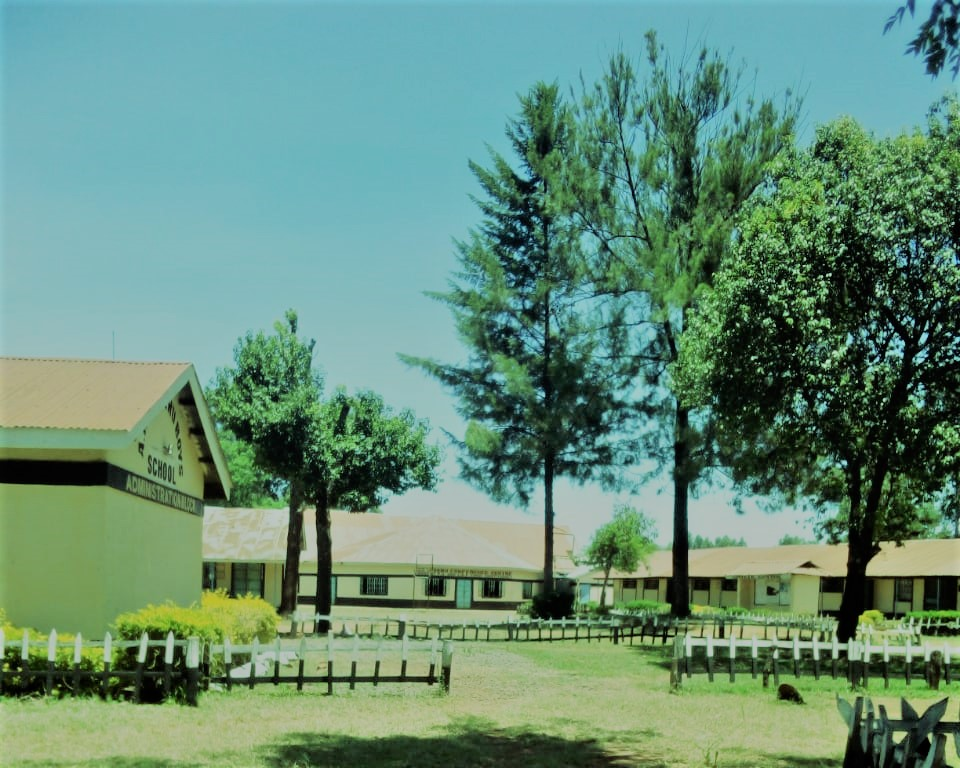

Welcome to AIC Leseru Boys Secondary School. We are committed to fostering a nurturing and inclusive environment where every student can thrive.We also provide quality and comprehensive education that not only emphasizesacademic exellence but also prootes personalgrowth, creativity, and social responsibility. Our Principal, Daniel Loponoki, leads our dedicated team of educators and staff in creating a supportive and challenging environment for our students.
AIC Leseru Boys Secondary School, founded in the year 1983 is a Boarding Boys, County level Secondary school located in Turbo Sub-County, Uasin Gishu County, Kenya. Under the leadership of Principal Daniel Loponoki assisted by his Deputy Mr.wilson Kimani Misoi, we strive to equip our students for life.
Mission: To equip students for life.
Vision: Sustainable education for empowerment.
Motto: Hard work to success.
Mrs. Linda Chepkemboi serves as the Director of studies, overdseeing the academic programs and ensuring the highest standards of education for our students.
Leseru Boys School has around 20 qualified and dedicated teachers. Each teacher is specialized in their subject area, ensuring that students receive high-quality instruction and personalized attention. The teachers are committed to fostering a supportive and challenging learning environment.
Leseru Boys School offers a variety of sports to promote physical fitness and teamwork among students. These include:
Leseru Boys School encourages students to join various societies and clubs to develop their interests and skills beyond the classroom. These include:
Our school periodically offers tenders for various services and supplies. Interested parties are encouraged to check this section regularly for updates on available opportunities.
Leseru Boys School invites interested and eligible suppliers to participate in the following tenders:
Stay informed about the latest news and updates from AIC Leseru Boys Secondary School. This section includes announcements, upcoming events, and important information for students and parents.
If you have any questions or need more information, please feel free to contact us:
Phone: (+254)0707603554
Email: aicleseruboys2024@gmail.com
Address: Postal Address: P.O. Box 3062, Turbo Sub-County, Uasin Gishu County, Kenya